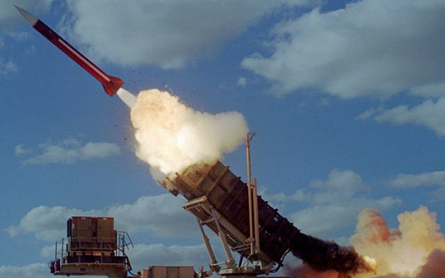
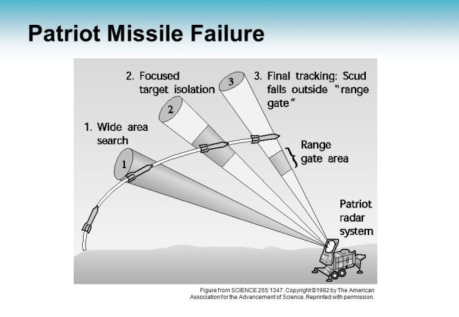

Patriot missile failure
The Patriot (Phased Array Tracking Radar to Intercept on Target) is a surface-to-air missile system.

On February 25 1991, during the Gulf war there has been a programming error in a Patriot defence system belonging to U.S., in fact it failed to properly track a missile launched (Scud) from Iraq causing the death of 28 U.S. soldiers and almost one hundred others were wounded.
This error was already present in all of the Patriots deployed in the region, however "the presence of the bug was masked by the fact that a particular Patriot weapons control computer had to be continuously running for several days before the bug could cause the hazard of a failure to track a missile". In this case:

The investigations has been made by the GAO (the U.S. General Accounting Office) and it reported that every hour of uptime there was an accumulating error of .003433 seconds, and this error of time was in common of all Patriots, then it wasn't a specific failure of one defence system. The office at the Army Missile Command responsible for the Patriot created an improved software program and the Army technical experts added a fix to correct the targeting imprecision.